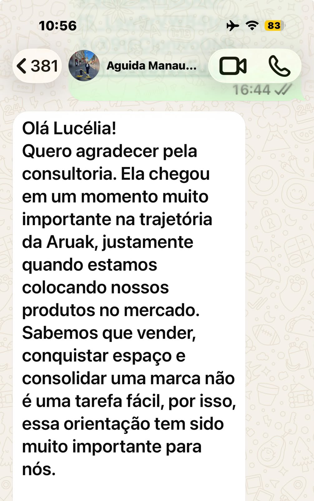
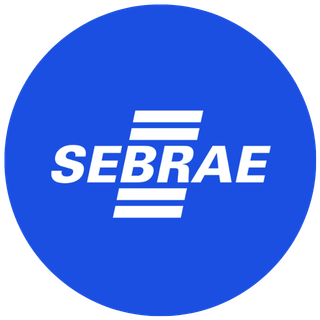

Exportar parece complicado demais?
“Sei que meu produto tem potencial lá fora, mas não sei por onde começar.”
“Documentação, regulamentação e certificações parecem um labirinto.”
“Tenho medo de formar o preço errado e ter prejuízo na primeira venda.”
“Não sei qual país escolher nem como encontrar compradores.”
“Já fui a feira ou rodada de negócios, mas não fechei nenhum contrato.”
“Acho que exportar é só para empresa grande.”
Exportar é um processo, não um privilégio das grandes empresas. Sua empresa não precisa ser grande para pensar global, precisa estar preparada.
COMEX IN COMPANY
Uma consultoria feita para a realidade da sua empresa, não um pacote genérico. Começamos entendendo onde você está e montamos juntos o caminho até o mercado internacional.
Clareza sobre onde você está
Diagnóstico de maturidade exportadora que mostra o que sua empresa já tem e o que falta para vender lá fora.
Plano sob medida
Prioridades, mercados-alvo e próximos passos definidos para o seu produto, seu porte e seu momento.
Acompanhamento de especialista
Você não fica sozinho: cada etapa é orientada por quem já conectou empresas a mais de 30 países.
Do diagnóstico ao cliente internacional
Exportar não significa fazer tudo sozinho. Significa coordenar cada etapa até o produto chegar ao cliente internacional.
-
1
Entender
Diagnóstico da empresa, do produto e do potencial exportador.
-
2
Preparar
Ajustes de produto, embalagem, certificações e preço internacional.
-
3
Organizar
Escolha de mercados, documentação e plano de exportação.
-
4
Executar
Prospecção, pitch, feiras, rodadas de negócios e negociação.
-
5
Acompanhar
Apoio na logística, no envio de amostras e nos primeiros embarques.
Uma consultoria para cada fase da sua empresa
As frentes de trabalho são definidas a partir do nível de maturidade exportadora identificado no diagnóstico.
Estruturar a base
Para quem está começando a pensar em exportar.
- Plano de negócio
- Regulamentação técnica e certificação
- Branding e design de produto
- Registro de marcas e patentes
- Marketing digital
- Procedimentos de exportação e importação
Preparar para o mundo
Para quem já tem estrutura e quer se adaptar ao mercado externo.
- Formação de preço internacional
- Registro de marcas e patentes internacional
- Website bilíngue
- Rótulo e embalagem internacional
- Certificações
- Planejamento estratégico internacional
Conquistar clientes
Para quem está pronto para prospectar e fechar negócios.
- Pesquisa e prospecção de mercados
- Pitch internacional
- Preparação para feiras internacionais
- Rodadas de negócios e negociação
- Logística e envio de amostras
- Financiamento à exportação
Não sabe em que fase sua empresa está? Começamos pelo diagnóstico.
Quero fazer o diagnósticoEmpresas que já deram o passo

Quem confiou, aprovou

Perguntas frequentes
Minha empresa é pequena. A consultoria serve para mim?
Sim. A COMEX IN COMPANY foi pensada para pequenas e médias empresas. O trabalho parte do diagnóstico da sua realidade, seja qual for o porte.
Nunca exportei. Por onde começamos?
Pelo diagnóstico de maturidade exportadora. Ele mostra em que fase sua empresa está e quais frentes de trabalho fazem sentido primeiro.
Qual é a diferença entre a consultoria e o curso?
O curso Exportar: você também pode ensina o caminho da exportação de forma online e no seu ritmo. A consultoria é personalizada: o trabalho é feito sobre o produto, os mercados e os desafios da sua empresa, com acompanhamento direto da especialista.
A consultoria é online ou presencial?
O formato é combinado conforme a necessidade da empresa. Fale com a gente pelo WhatsApp para entender as opções.
Quanto custa?
O investimento depende do escopo definido após o diagnóstico. Agende uma conversa para receber uma proposta sob medida.
Atende empresas de serviços, não só de produtos?
Sim. A internacionalização vale para produtos e serviços, e o plano é adaptado ao seu tipo de negócio.
Vamos levar sua empresa para o mercado internacional?
Agende uma conversa sem compromisso. Entendemos o momento da sua empresa e indicamos o melhor caminho.